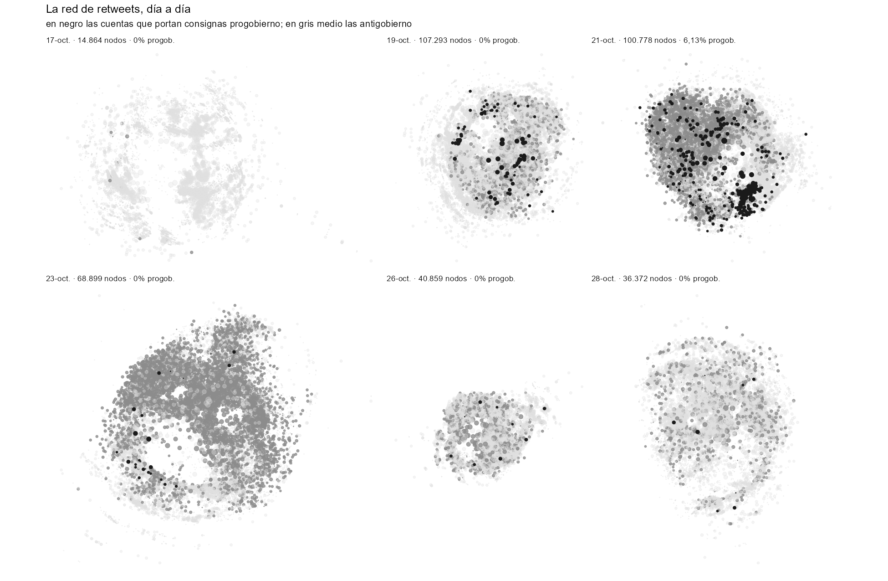

Cómo se mide. Dos repertorios de consigna verificados en el corpus. Progobierno: #YoApoyoAlPresidente, #CondenamosLaDelincuencia, #PazParaChile. Antigobierno: #RenunciaPiñera, #PiñeraDictador, #QueSeVayanLosMilicos, #ChileViolatesHumanRights. Se expresan como tasa por cada 10.000 publicaciones, para neutralizar la enorme variación de volumen entre días.
En las consignas
El 12 de octubre, antes del estallido, las consignas progobierno superaban a las opositoras. El 17 y el 18 desaparecen, con razones de 143 a 1 y 805 a 1. Reaparecen el 19 al 21 —la contramovilización tras los saqueos y el estado de emergencia— y el 21 alcanzan su máximo absoluto, 201,8 por diez mil. Desde el 22 se derrumban: 431 a 1 el día 23, 508 a 1 el día 26.
En el conjunto del corpus son 31.431 publicaciones progobierno (0,51%) frente a 1.405.307 antigobierno (22,96%).
En la estructura de la red
Más decisivo que el conteo es si el polo existe como comunidad. Se reconstruyó la red de retweets de cada uno de los 16 días con volumen suficiente y se clasificó cada comunidad por la composición de polo del contenido que escriben sus miembros.
Una comunidad progobierno aparece en exactamente tres días: el 12 de octubre (20,7% de la red), el 20 (18,6%) y el 21 (6,1%). Cero en los otros trece.

Desapareció dos veces
Esa es la forma del fenómeno, y es más interesante que una sola fecha. El polo se evapora cuando estalla la crisis (13 al 19 de octubre), vuelve durante el estado de emergencia, y se extingue definitivamente desde el 22.
Un hallazgo que no buscábamos
La modularidad cae sostenidamente: 0,706 el 17 de octubre, 0,504 el 18, y entre 0,356 y 0,383 los últimos días. La red se vuelve menos dividida a medida que avanza el estallido.
Es lo contrario de lo que uno esperaría de una crisis política, y sugiere que el episodio funcionó como evento unificador y no polarizante — al menos dentro de lo que este corpus captura.
Una advertencia
El indicador es léxico, no ideológico. Clasifica cuentas por las consignas que usan, no por su posición: alguien que cite #YoApoyoAlPresidente para burlarse queda contado en ese polo. Con 31.431 publicaciones en total, un sesgo así no es despreciable.